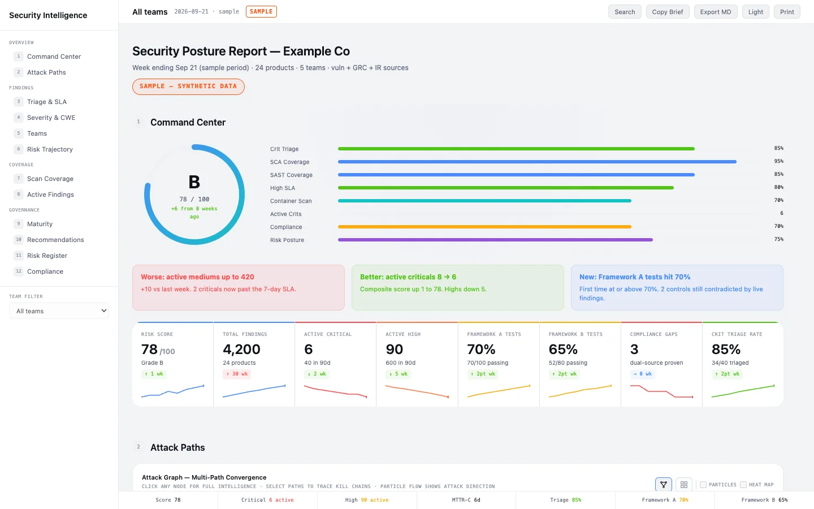
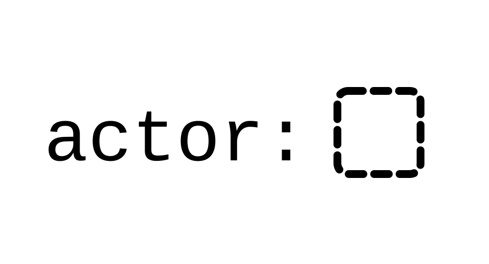
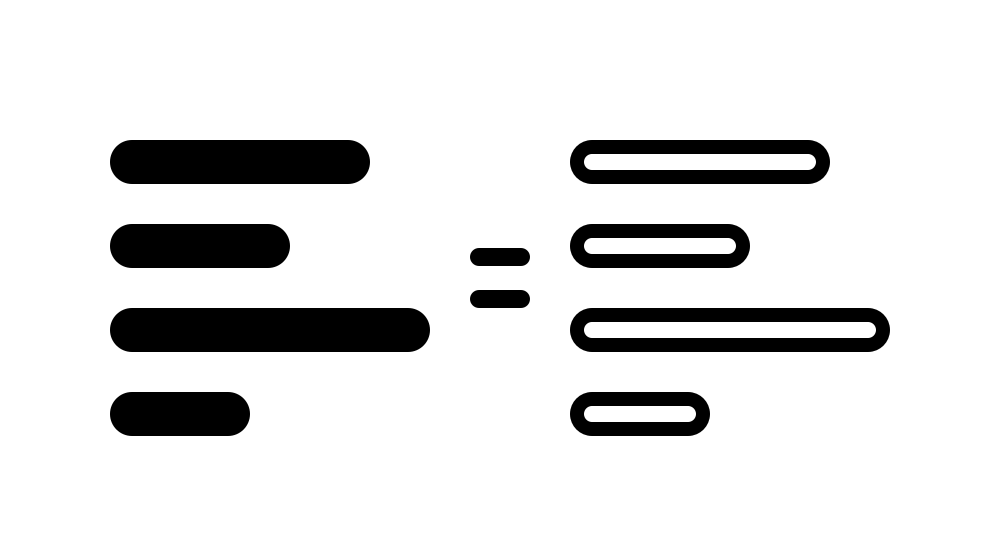
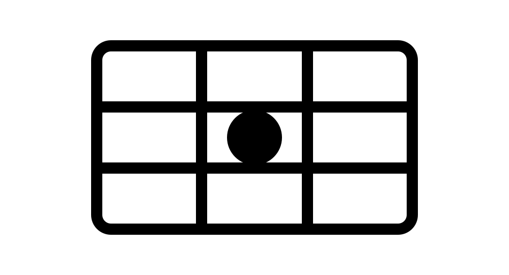
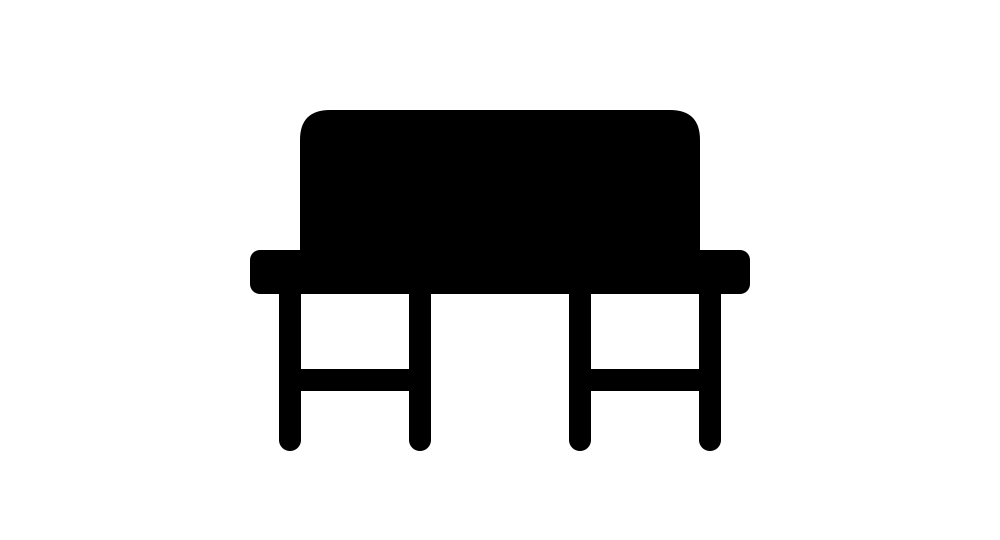

Security · the day job · 4 pieces · 2 essays
Guardrails, not gates.
How I run product security, and the security work I’ve published. Roles and dates are on the career page.
The work

SecMCPHub→
Claude Code skills that turn vulnerability, GRC, and incident data into one monthly security review.

Ash Semgrep rules↗
Seven rules for authorization gaps in Ash Framework apps. One flags any changeset or query built without an actor:, so the resource’s policies may never run.
Elixir secure coding↗
Podium’s open secure-coding curriculum for Elixir engineers. Top contributor.

Brumby Code Checker→
A redundancy scanner for C++, Java, and Ada, built for Lockheed Martin systems. Three similarity measures combined into one weighted score.
Writing

AI in security↗
Volume from the model, trust from the structure: AI triage of findings, agents doing security work through deterministic scripts, and guarding the agents developers use.

Building an AppSec program that works↗
The essay behind the program: the four legs of the chair, the build order, and seven common failures.